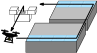

Doctoral Research: Integrated Control of Aircraft Motion and Power Electronics to Achieve Efficient In-flight Inductive Power Transfer for Drones (Tentative Title)

Achievement
International Conference (Peer-reviewed)
Kota Fujimoto, Osamu Shimizu, Hiroshi Fujimoto, Jin Katsuya, Tetsu Sato, "Feasibility Study for Dynamic Wireless Power Transfer in Simulation with Big Data Focusing on Battery Capacity Requirement of Electric Vehicles," in the 27th edition of the International Symposium on Power Electronics, Electrical Drives, Automation and Motion (SPEEDAM), Ischia, Italy, 2024.
Sakahisa Nagai, Yusuke Satoh, Kota Fujimoto, Hiroshi Fujimoto, "Sensorless Drone Detection for In-Flight Inductive Power Transfer Using Transmitter-Side Voltage Pulses," in IEEE 2024 Wireless Power Technology Conference and Expo (WPTCE), Kyoto, Japan, 2024.
Takuma Katagiri, Kentaro Yokota, Kota Fujimoto, Sakahisa Nagai, Hiroshi Fujimoto, "Basic Study on Velocity Control in Wing Coordinate System Using Acceleration-based Disturbance Observer for Tilt-wing eVTOL," in The 10th IEEJ international workshop on Sensing, Actuation, Motion Control, and Optimization (SAMCON), Kyoto, Japan, 2024.
Shogo Yamada, Kota Fujimoto, Hiroshi Fujimoto, "Basic Study on Robust Perfect Tracking Control Based on Parameter Estimation Reducing Outlier Effects," in The 10th IEEJ international workshop on Sensing, Actuation, Motion Control, and Optimization (SAMCON), Kyoto, Japan, 2024.
Kota Fujimoto, Hiroshi Fujimoto, Alessandro Correa Victorino, Pedro Castillo, "Optimal Energy Trajectory Generation Based on Pitch-Dependent Mutual Inductance Model for In-Flight Inductive Power Transfer of Drones," in IEEE 18th International Conference on Advanced Motion Control (AMC), Kyoto, Japan, 2024.
Kota Fujimoto, Hiroshi Fujimoto, Yoshihiro Isaoka, Yuki Terada, "High Precision Control for Twin-Drive System Based on Mode Decoupling with Virtual Viscosity: Equivalent Controller Transform for Machine Tool," in IEEE 18th International Conference on Advanced Motion Control (AMC), Kyoto, Japan, 2024.
Kota Fujimoto, Sakahisa Nagai, Binh-Minh Nguyen, Hiroshi Fujimoto, "Test Bench Study on Attitude Estimation in Ground Effect Region Based on Motor Current for In-Flight Inductive Power Transfer of Drones," in IEEE 2023 The 49th Annual Conference of the IEEE Industrial Electronics Society (IECON), Singapore, 2023. [arXiv]
Yusuke Satoh, Kota Fujimoto, Ryo Matsumoto, Sakahisa Nagai, Binh-Minh Nguyen, Hiroshi Fujimoto, "Basic Study on Received Power Control of In-Flight Inductive Power Transfer for Drones by Active Rectifier Switching and Altitude Regulation," in IEEE 2023 The 49th Annual Conference of the IEEE Industrial Electronics Society (IECON), Singapore, 2023.
Kota Fujimoto, Takumi Hamada and Hiroshi Fujimoto, "Proposal on Model Based Current Overshoot Suppression of Receiver Side Coil in Drone Wireless Power Transfer System," in IEEE 2022 Wireless Power Week (WPW), pp. 235-239, Bordeaux, France, 2022, doi: 10.1109/WPW54272.2022.9854039. [arXiv]
Domestic Conference (Not-reviewed)
Kota Fujimoto , Sakahisa Nagai, Binh-Minh Nguyen, Hiroshi Fujimoto,"Motor Current Based Attitude Estimation Considering Ground Effect for In-flight Inductive Power Transfer of Drones: Basic Concept and Test-Bench Evaluation," in IEE-Japan 2024 Industry Applications Society Conference (JIASC), No. TBA , Mito City Civic Center, 2024. (To be presented)
Kota Fujimoto, Yusuke Satoh, Sakahisa Nagai, Hiroshi Fujimoto, "Basic Study on Receiving-Side System Design of In-flight Inductive Power Transfer for Drones Considering Weight Limitation," in IEE-Japan Joint Technical Meeting on Power Engineering/Power Systems Engineering/Semiconductor Power Converter (SPC), No. PE-24-059,PSE-24-071,SPC-24-113, Nagasaki, 2024.
Kota Fujimoto, Hiroshi Fujimoto, Yoshihiro Isaoka, Yuki Terada, "High Precision Control for Twin-Drive System of Machine Tool Based on Mode Decoupling with Virtual Viscosity: Basic Study on Two-Inertia System," in IEE-Japan Technical Meeting on Mechatronics Control (PSS), No. MEC23011, Tokyo, 2023
Yusuke Satoh, Kota Fujimoto, Ryo Matsumoto, Sakahisa Nagai, Binh-Minh Nguyen, Hiroshi Fujimoto, "Basic Study on Flight Altitude and Battery Current Control in In-Flight Wireless Power Transfer for Drones," in IEE-Japan Joint Technical Meeting on Power Engineering/Power Systems Engineering/Semiconductor Power Converter (SPC), No. SPC23141 , Okinawa, 2023.
Kota Fujimoto, Osamu Shimizu, Hiroshi Fujimoto, Jin Katsuya, Tetsu Sato, "Requirement Analysis for Dynamic Wireless Power Transfer with Big Data from Real Vehicles," in IEE-Japan Joint Technical Meeting on Power Engineering/Power Systems Engineering/Semiconductor Power Converter (SPC), No. PE-23-084,PSE-23-090,SPC-23-140, Okinawa, 2023.
Kota Fujimoto , Kentaro Yokota, Sakahisa Nagai, Hiroshi Fujimoto,"Modeling and Verification of Pitch-Dependent Coupling Coefficient for WPT to Flying Drone," in IEE-Japan 2021 Industry Applications Society Conference (JIASC), No. 48 ,Nagaoka University of Technology, 2021.